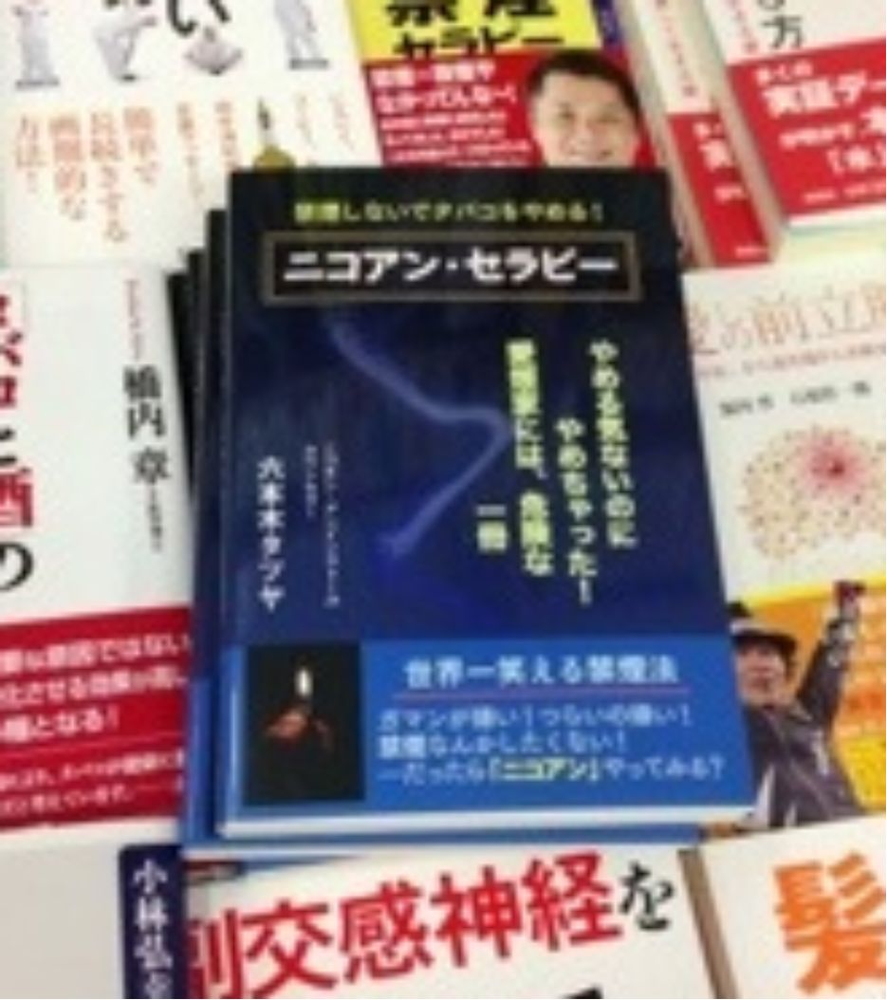
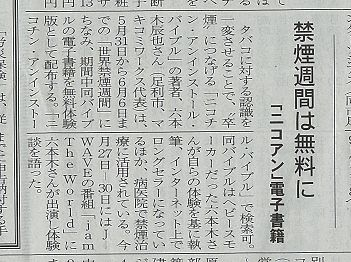

| あなたも全米第１位！: ７日間で確実に海外出版する方法 | |
| 六本木タツヤ | |
| Makikomi Works LLC (2018) | |

【著者プロフィール】

六本木タツヤ／Tony Roppon
本名・六本木辰也。
群馬県伊勢崎市出身、栃木県足利市在住。
2018年2月から6月までの ５ヶ月 で、Amazonで 120冊 のKindle書籍を出版。特に６月は、30日間で 73冊 を出版。
うち34冊は、英語版・ドイツ語版・フランス語版・イタリア語版・スペイン語版として 全世界 を対象に発売中。 全米第１位 の実績も持つ。
なお、全世界向けの英語名 は Tony Roppo n 。
他の追随を許さない、圧倒的な スピード と 行動量・知識量・表現力 で、さらに 500冊、1000冊 を目指して作家活動中。
どんなに普通の人でも、 最短３日で出版 できるようになるコンサルティングも提供中。
....*.....*.....*.....*.....*.....*.....*.....*.....*.... *.....*....
●メルマガ「一生、学んで暮らしたい」365日、毎朝配信。
http://www.mag2.com/m/0001681430.html
●オフィシャルサイト： http://makikomi.jp/
●Facebook： https://www.facebook.com/Tony.Roppon
●LINE：t_roppongi
●Instagram：tony_roppon
●Twitter： https://twitter.com/t_roppongi
Contents
Introduction
こんにちは！
国際的プロ作家の 六本木タツヤ です。
私は、2018年の2月に初めて、 AmazonのKindleで本を出版する 、というやり方をおぼえました。
そして現在は、2018年の8月半ば。
本書は私の、 172冊目 の著書となります。
つまり私は、 約半年とちょっとで、170冊以上の本を出版 したのです。
そして、そのうちの 74冊は、海外出版 です。
英語、ドイツ語、フランス語、スペイン語、イタリア語の５ヶ国語で、全世界に向けて出版してきました。
そのうちの何冊かは、 「全米第一位」 を記録しました。
本書では、こんな私の半年ちょっとの実体験をもとに、こんなことをあなたにご紹介します。
● 誰でも本を出版できる方法
● 英語で海外出版できる方法
● 全米第一位を獲得する方法
● マスコミに取材される方法
これらの方法をマスターすれば、あなたにはこのようなメリットがあります。
● 英語力が格段にアップする
● いつでも自由に、全世界に向けて、自分の知識や経験を発信できる
● お金を一円もかけずに、全世界に向けて、半永久的に広告宣伝できる
● 全米第一位を記録したプロ作家として、絶大な信頼を獲得できる
● 同業他社、同業者に圧倒的な差を付けられる
あなたも７日後には、海外出版を果たし、全米第一位に輝いているかもしれません。
そのやり方を、一緒に学んでいきましょう。
さらに詳しく知りたい方は、 海外出版支援センター のホームページをご覧ください。
https://line.me/R/ti/p/%40jsd9781g
なお、海外出版に関する最新情報は、FacebookやLINEでも発信しています。
ぜひご登録ください。
● Facebook： https://goo.gl/9ZHDAj
● LINE：https://line.me/R/ti/p/%40jsd9781g
Chapter１：私の出版歴
日本のAmazonでは
私は現在、日本のAmazon.co.jpで、 170冊 以上を出版しています。
これが、私のAmazon著者ページです。
私の 本名は六本木辰也 ですが、辰也を「シンヤ」と読まれることが多いので、カタカナでタツヤにしています。
170冊も出していると、中にはよく売れて ベストセラー になる本も出てきます。
たとえばこの本などは、
「文学理論」 というカテゴリーの中では、常に第１位か第２位をキープしています。
こういうベストセラーが10冊、20冊と出せるようになれば、主婦のお小遣いどころか、サラリーマンの給料くらいは、毎月コンスタントに入ってきます。
アメリカのAmazonでは
そして私は、日本だけでなく アメリカのAmazon.com でも、自分の著者ページを持っています。
海外では六本木タツヤではなく 、 Tony Roppo n という名前を使っています。
外国人にとっては、「Tatsuya」という名前は、発音しづらいですからね。
このTony Ropponの名前で私は、70冊以上の 「洋書」 を出版しているのです。
Amazonはいまや、世界最大のネット書店ですから、アメリカだけでなく、イギリスやドイツやフランスなどのヨーロッパ各国、インド、ブラジル、オーストラリア、カナダなど、ほぼ全世界に広がっています。
つまり、私の本はいまや、 世界中 のどの国にいても、簡単に買うことができるのです。
全米第一位も可能
そして、このくらいたくさんの本を出版すれば、中には 「全米第一位」 を記録する本も出てきます。
たとえばこの本は、
私が住んでいる栃木県足利市の、 「銘仙」 という着物の歴史について記した 「Kimono Town Ashikaga 2」 という本なのですが、
ご覧のとおり、アメリカの Amazonの 「Antique & Collective Textile & Costume」 というカテゴリーの中で、第一位を記録しました。
足利なんていう田舎の町が、全米第一位を飾るなんて、これはもう 「偉業」 といっても差し支えないでしょう。
この件を足利市長に報告したところ、ご丁寧なお礼のメールをいただきました。
他にも、このように、何度も 「全米第一位」 を獲得しています。
ドイツやフランスでも第一位
さらに、先ほども述べたとおり、Amazonは全世界でつながっていますから、アメリカだけでなく、 ドイツやフランス のAmazonでも第一位になることができます。
こちらはフランスで、
こちらはドイツで第一位になったときの記録です。
教え子も驚異的な記録
こういうことができるのも、「私だから」というわけではありません。
誰にでも、同じことが再現できます。
（もちろん、それなりの努力は必要ですが）
たとえば、私のコンサルを受けて、国内出版に続き海外出版まで果たした Chompoo☆ちひろ さん。
https://www.facebook.com/chihiro.chompoo
彼女も、初の海外出版で、驚異的な記録を打ち立てました。
彼女の体験談をお読みください。
....*.....*.....*.....*.....*.....*.....*.....*.....*.... *.....*....
初の海外出版、サラリと 3日で できました～！
私の伝説のぶっ飛んだネイルデザインを一挙公開するネイルブック 『AMAZING NAIL ART』 で。
(日本語版は『ぶっ飛びネイルBOOK』)
私は日頃この爪ひとつで占いのご予約を頂いたり、アメリカに行った時には人だかりができたりしたほどなので、これは海外受けするネタなのは分かっていて、最初から海外出版を見越して書きました。
結果は、初海外出版にして
● ドイツで２部門１位獲得！
● イギリスでファッション部門で１位獲得！
● 日本の洋書クラフト&ホビー部門で１位獲得！
● 全米でミニアチュール部門２位獲得！
と、幸先の良いスタート！
電子書籍の出版自体はもう3冊経験したのですっかり慣れました。
個人がスピーディーに、世界中に自分の著作を並べられるシステムに感動！！
次回作も鋭意準備中～♪
これからも世界を相手に、笑撃を与えていきます。
....*.....*.....*.....*.....*.....*.....*.....*.....*.... *.....*....
と、初の海外出版にして、
全米第２位
全独第１位
全英第１位
という偉業を成し遂げたのです。
彼女の本職は占い師＆カラーセラピストですが、こんな記録を持っている同業者が、他に存在しますか？
まず、日本にはいないでしょうね。
つまり彼女は、単に「海外出版しました」だけでもすごいのに、 「世界中でベストセラー」という実績 まで手に入れたのです。
あなたも全米第一位になれる
もちろん彼女は、ルックスを見ても分かるとおり、自分のブランディングには相当の力を入れています。
海外出版した本の中身も、かなり気合いが入っています。
だからあなたも、頑張って海外出版すれば、全米第一位になることも、決して夢ではありません。
一回目ではうまくいかなくても、５回、10回と試行錯誤すれば、必ず全米第一位、全独第一位、全仏第一位になれます。
これって、相当すごくないですか？
５回や10回のチャレンジで全米第一位、言い換えれば 「世界一」 になれるのなら、挑戦しない理由がありませんよね。
あなたにも、それが可能です。
あなたも、全米第一位になれるのです！
Chapter２：なぜ、海外出版できるのか
出版が変わった
ここまでを読んでも、あなたは、こう思うかもしれません。
「出版なんて、大変そう」
「私みたいな一般人に、とても出版なんて......」
と。
確かに、一昔前までは、「出版」なんて、 ごく一部 の限られた人にしか実現できませんでした。
実は私も５年前に、一冊だけ「商業出版」したことがあります。

この本を出すまでには、相当な苦労がありました。
通常、出版社から本を出すためには、まず 「出版企画書」 というものを書いて、編集者に見せなければいけません。
その企画書を見て、編集者が「面白そう」と思ったら、会社の企画会議に出し、それが通れば出版、通らなければボツです。
私も、出版が決まるまでに、どれだけ企画書を書き、どれだけボツを食らったか、数えきれません。
通常はこうやって、本の出版が決まるのですが、他に 「自費出版」 というのもあります。
これは、著者が印刷費用とか流通費用を負担する、つまり出版社に「お金を払う」やり方です。
昔だったらそれこそ、300万円とか500万円を払って、誰も読まないような本を印刷して、家族や親戚や取引先にむりやり配る。
とまあ、要するに「金持ちの道楽」という意味での出版もありました。
現在では、だいぶ印刷や流通のコストが抑えられていますが、それでも最低50万円くらいはかかります。
これは、一般的な出版というより、お金を出して 「記念品を買う」 ようなものですね。
このように、一昔前の出版は、莫大なお金と労力を必要としました。
しかし、今日では、それはもはや「過去の常識」に過ぎません。
時代は、大きく変わった のです。
現代の出版
私が本書でご紹介するのは、このような「古い常識」での出版ではありません。
私が実践し、指導している出版方法なら、
● 企画書 がいらない
● 出版費用 がいらない
● 文章力 がいらない
● 英語力 もいらない
これで、海外出版ができてしまうのです。
では、逆に、出版のために必要なものは何か？
● 行動力
● 知的好奇心
● 世界に伝えたいことがある、という 使命感
たったこれだけ。
つまり、あなたでも可能なのです。
その方法とは
そんな画期的な出版方法とは、何でしょうか？
これです。
写真の右下に写っている人物は、いまやビル・ゲイツやウォーレン・バフェットを抜いて世界一のお金持ちになった、Amazonの創設者ジェフ・ベゾスです。
そして写真の左には、 「Kindle Direct Publishing」 と書かれています。
これが、本書でご紹介する、現時点で最先端の出版方法なのです。
Kindle Direct Publishingとは
では、Kindle Direct Publishing（KDP）とは、どんなものでしょうか？
写真の中で、ジェフ・ベゾスはこのように説明しています。
Kindle direct publishing
● Authors can publish in hours
● Authors publish for free
● Authors keep their copyrights
● Authors publish on their schedule
● Authors can distribute globally
● Authors receive royalties of 70%
これを簡単に翻訳すると、
● 著者は数時間で公開できます
● 著者は無料で公開します
● 著者は著作権を保有しています
● 著者はスケジュールに従って公開します
● 著者は世界中に配布することができます
● 著者は70％のロイヤルティを受け取る
ということになります。
これだけでも「すごい！」と思うのではないでしょうか？
Kindleとは
ではそもそも、Kindleとは何でしょうか？
Amazonが開発・販売している、 電子書籍 の形式のことです。
このような専用リーダーで読むのが一般的ですが、
スマホアプリやパソコンでも、問題なく読むことができます。
これなら、スマホの中に何千冊という電子書籍が収録できるので、どこに行くにも本を持っていく必要がありません。
もちろん、いまあなたがお読みになっている本書も、Kindleの電子書籍です。
その便利さについては、これ以上説明する必要はないでしょう。
紙の本か、電子書籍か
ここまでの話を聞いて、
「なんだ、出版といっても電子書籍か～」
と、がっかりする人もいます。
その人の中では、電子書籍というのは、紙で印刷された本よりも「下」になるのです。
紙の本で出版した人は一流、電子書籍は二流。
だから、どうせ出版するなら、紙の本がいい......。
そういう人の気持ちも、よく分かります。
しかし、現実的に考えて、果たしてその判断は妥当でしょうか？
ここ数十年、いわゆる「本」の売上は、右肩下がりに落ちています。
日本の人口が減っているのですから、当たり前のことですね。
それに比例して、本屋さんの数も激減しています。
つい先日は、六本木の名物書店、青山ブックセンターまで閉店しました。
今後も、書店はバタバタと潰れていくでしょう。
つまり、せっかくあなたが苦労して、お金と労力をかけて紙の本を出版しても、置いてくれる 本屋さんがない のです。
そうなると結局は、Amazonで買うしかありません。
どうせAmazonで買うなら、紙の本でもKindle電子書籍でも、買う手間としては、たいして変わりません。
しかし、電子書籍の売上は、紙の本とは逆に、右肩上がりで 激増 しています。
日本はまだまだ遅れていますが、アメリカなどでは、すでに電子書籍の図書館も普通にあるくらい普及しています。
日本でも、マンガの売上は、すでに紙の本より電子書籍の方が上回っています。
今後、この傾向が逆転することは、普通に考えてあり得ないでしょう。
そして、紙の本には「品切れ」とか「絶版」がありますが、電子書籍にはそれがありません。
実は私の場合、苦労して商業出版にこぎつけたのに、その 出版社が倒産 してしまいました。
つまり、私の書いた本は、もはや古本でしか手に入らないのです。
今後も、書店や出版社の倒産は続くでしょう。
しかし、Amazonで出したKindle電子書籍は、Amazonが潰れたりしない限り、半永久的に売れ続けます。
そして、Kindle本の印税は、 最大70％ 。
紙の本の印税は、「良くて」10%です。
このような現状を考えれば、いまや、紙の本を出版するなんて、 コストとリスク が馬鹿になりません。
こんな時代に紙の本を出したい、というのは、
「いい大学を出て、銀行に就職して、退職金まで勤めれば一生安泰！」
というくらい、ズレた考え方だと、私は思います。
Kindleの一人勝ち
このように、紙の本と電子書籍を比較すれば、どこの誰がどう考えても、電子書籍の方が有利に決まっています。
では、どこから電子書籍を出すべきか？
昔だったら、自分で文章を書いて、「PDF」というファイル形式にして、ヤフオクやFC2カートなどで「情報商材」として売ることが一般的でした。
しかし、現代ではそのやり方は、「怪しい」「うさんくさい」と思われるでしょう。
他にも電子書籍を売っているプラットフォーム、たとえば楽天KOBOなどもありますが、知名度や普及度に関しては、Amazonの足下にも及びません。
本を買う側にしても、「あの」 天下のAmazon で売っているのなら、安心感があります。
このような理由で、いまの私たちが「本を出す」「出版する」という場合は、AmazonのKDPからKindle電子書籍を出す、という選択になります。
次の章から、その具体的なやり方をご説明します。
Chapter３：これであなたも出版できる
３ステップでOK
KDPで出版するためには、この３ステップだけでOKです。
- アカウントを作成する
- 表紙と原稿を作る
- アップロードする
たったこれだけ。
それぞれに一日ずつかけても、３日あれば充分です。
私の場合は、もう慣れていますから、本にするべきアイデアを思いついたら、その日のうちに出版までこぎ着けてしまいます。
もしあなたが、初めて本を出版するにしても、 せいぜい７日間 もあれば、海外出版まで成し遂げることができます。
子供の夏休みの宿題と比べれば、何の苦労もありません。
大人だったら、誰でもできて当たり前なのです。
１. アカウントを作成する
まず、KDPのアカウントを作ります。
https://kdp.amazon.co.jp/ja_JP/
あなたがすでに、日本のAmazonで何か買い物をしたことがあるのなら、そのアカウントに使っているメールアドレスとパスワードで、KDPのアカウントが開けます。
そして、その具体的なやり方ですが、こちらのAmazonによる「公式ガイド」を参考にしてください。
こちらから、無料でダウンロードできます。
画面右の 「1-Clickで今すぐ買う」 を選ぶと、あなたのスマホやKindle端末にダウンロードされます。
アカウントの作成方法、銀行口座の登録方法、そして電子書籍の出品方法まで、すべてこの中に書かれています。
Amazonはアメリカの会社なので、日本に比べると「いきなり」仕様がガラッと変更になったりします。
そういうことがありますので、常に最新の、Amazon公式ガイドブックを参考にするのが安全です。
ただ、いかにもアメリカのマニュアルらしく、日本人にはちょっと分かりにくい部分もあります。
そのような方には、私が コンサルティング で指導いたしますので、遠慮なくお問い合わせください。
● HP： http://makikomi.jp/osp/
● Facebook： https://goo.gl/9ZHDAj
● LINE： https://line.me/R/ti/p/%40jsd9781g
２. 表紙と原稿を作る
アカウントができたら、いよいよ本の 「執筆」 です。
本が売れるか売れないかは、 「タイトル」と「表紙」で８割 決まります。
魅力的なタイトルがつけられるかどうかで、注目度も売れ行きも変わるのです。
もちろん、日本で第一位、全米第一位になれるかどうかも、ほぼタイトルと表紙だけで決まると言っていいでしょう。
私の場合は、長年 「ネーミング・コンサルタント」 をやっており、タイトルとかキャッチコピーを考えることには長けていると思います。
つい先日も、フジテレビの 「ホンマでっか？」 という番組から取材があり、私が６年も前に考えたネーミングが、「面白い肩書き」として紹介されました。
ずば抜けたタイトルが思いつかない、という方も、私にお任せください。
そしてタイトルが決まったら、表紙を作ります。
これも、デザインのプロに頼むのが無難ではありますが、最近ではこんな便利なサイトもあります。
豊富なテンプレートの中から気に入ったデザインを選び、タイトルと著者名を入れるだけで、かっこいい本の表紙が出来上がります。
表紙ができたら、あとはひたすら原稿の執筆です。
Wordでも、AppleのPagesでも、スマホのメモ帳でも、何でも構いません。
私は、外出先でも修正できるので、 Googleのドキュメント を使っています。
https://www.google.com/intl/ja_jp/docs/about/
原稿の量は？
では、どのくらいの「量」を書けばいいのか？
あくまでの私の主観ですが、原稿用紙で「2 0 枚」くらいで充分だと思います。
なぜなら、 素人が無理して長い文章を書こうとしても、読みづらくしかならない からです。
紙の本と電子書籍とでは、 「まったくの別物」 だと思ってください。
紙の本の場合は、ある程度の「厚さ」がないと、本屋で並べたときに埋もれてしまいます。
だから、紙の本を出すときは、
「あれもこれも」
詰め込んで、ページを水増しするのです。
本屋さんで売っている紙の本のほとんどが「つまらない」のは、これが理由です。
誰にでも合わせられるように、あれもこれも詰め込むから、結果としてつまらなくなるのです。
しかし電子書籍の場合は、「厚さ」というのが関係ありません。
だから、紙の本とは逆に、必要なことだけに「絞って」出すことができます。
もし、あなたが本を出して、世の中に伝えたいことが「３つ」あるのだとしたら？
その３つを、別々にして、 ３冊に分けて 出しましょう。
決して、「あれもこれも」欲をかいて詰め込んではいけません。
読む方の立場に立てば、自分の興味のないところは、飛ばしますから。
こう考えると、一冊に必要な分量は、せいぜい原稿用紙20枚もあれば充分、ということが理解できるでしょう。
とはいえ、もしもあなたが、生まれて初めて本を書くのだとしたら、20枚でも「多い」と感じるかもしれませんね。
また、「書きたいことを絞る」と言われても、具体的にどう絞ったらいいのかも、悩むところでしょう。
そういう方には、私が コンサル時にインタビュー して、「書くべきこと」や「構成」をアドバイスします。
場合によっては、 代筆 もやってあげます。
そうやって、とにかく一冊でも出してから、３冊、５冊と出すうちに、いやでもうまくなります。
そして、あとでそれを一冊にまとめれば、読み応えのある本になります。
本書も、そうやって作られました。
この本は、私の海外出版ノウハウの「総集編」なのです。
３. アップロードする
こうして、表紙と本文ができたら、あとはそれをKDPに 「アップロード」 するだけです。
ブログを更新したり、Facebookに写真を投稿したりするのと、たいして変わりません。
注意するのは、商品の「説明」と、どの 「カテゴリー」 に出品するか。
このへんは、ヤフオクやメルカリに出品するのと同じですね。
アップロードが完了すれば、半日から一日後には、Amazonで発売開始となります。
これは、私の息子が21歳のときに、私の指導によって出版した 「香水ぼーやのバーチャル・フレグランス」 という本です。
わずか21歳の若造が、Amazonで本を出版することができるのです。
そしてちゃんと、☆☆☆☆☆の高評価をもらうこともできます。
いまは、そういう時代なのです。
一流の著者と認識される
このような３ステップの手順を踏めば、あなたは「著者」として、Amazonでデビューすることができます。
そして、次の１ステップによって、さらにあなたは 「一流の著者」 として、世間に認められることにもなります。
それが、Amazonの提供している 「著者セントラル」 という機能です。
https://authorcentral.amazon.co.jp/
このページに、自分のプロフィールや写真を登録すると、このように表示されます。
私の場合はこう。
私のクライアント様は、こうなります。
つまり、Amazonの中に、あなたの 「著者ページ」 が無料で作れるのです！
これを、自分のお客様に見せたら、どう思われるでしょうか？
「すごい、この人、 天下のAmazon で本出してるんだ～」
「ちゃんとした 一流の作家 なんだ～」
と、確実に思ってくれるでしょう。
いま現在、ブログやホームページを持っているのは「当たり前」です。
しかし、20年前だったら、ブログを書いているというだけで、テレビやラジオや雑誌に取材されました。
それと同じことがいま、Amazonで始まっているのです。
マスコミは、この「著者ページ」を見て、取材の依頼をしてくるでしょう。
誰がどう見たって、 「Amazonで本まで出してる専門家」 にしか見えないですからね。
いまや、ブランディングには、この「Amazon著者ページ」は、不可欠です。
さらに、海外出版まで
こうしてあなたは、とりあえず日本のAmazon.co.jpから本を出し、一流の専門家として認められるようになりました。
ところで、思い出してください。
Amazonというのは、いまや「世界最大」のネット書店であるということを。
ということは、日本のAmazon.co.jpで本を出したということは......？
それと同時に、「全世界で」あなたの本が出版された、とイコールなのです。
実際に、たとえばフランス の Amazon.f r では、このように表示されます。
右の方に「2.99ユーロ」と書いてありますね。
つまり、フランスの人がこれを買おうと思えば、買えるのです。
これが、紙の本と電子書籍との、最大の違いでしょう。
ただし、本のタイトルは、
「KousuiBouyanoVirtualFragrance」と、 ローマ字 です。
そして内容説明は、日本語です。
そりゃそうですよね、日本語で書いて、日本のAmazonで出した本ですから。
しかし、これって、もったいなくないですか？
せっかく、フランスのAmazonにあなたの本が並んでいるのに、内容は日本語。
ということは、これを買うのは、フランスにいる日本人「だけ」ということです。
これを 「機会損失」 と言います。
英語で出さなきゃ意味がない
いま、日本の人口は、どんどん減っています。
しかし、世界の人口は、増えています。
日本語しか読めない人は、どんどん減っています。
しかし、英語が読める人は、増えていきます。
ここまで考えれば、もう、迷うことはないですよね？
あなたも、せっかく本を書いたのなら。
「英語で」
出すべきなのです。
そうしなければ、思いっきり機会損失です。
英語が読める人の人口は、日本語しか読めない人の、何倍になるのでしょうか？
まあ、10倍なんてもんじゃないでしょうね。
そして、この差はどんどん広がっていきます。
もしあなたが、ビジネスをやっているにしても、研究をしているにしても、もはや日本人しか相手にしないのは「時間のムダ」です。
これからは、まず真っ先に、 「海外」を視野に 入れないとダメです。
そんなことは、とっくに分かっている......。
でも、いまさら英語なんて......。
いまだに、こう思っている日本人が大多数です。
ということは、
「だからこそ」
いま、英語で海外出版することで、大きな利益を手にできるのです。
せっかくAmazonという世界最大のショップがあるのに、「英語ができない」という理由だけで、そこに出店しないなんて......。
経営者としては、失格ですよね。
Chapter４：あなたも英語で出版できる
翻訳はどうするのか
さあ、では、あなたの本を「英語で」出しましょう！
と言われて、自分で翻訳できる人でしたら、もう迷うことはありません。
すぐに、あなたが世界に伝えたいことを英語で表現して、KDPで出版しましょう。
しかし、それがすぐにできるような人は、日本にはほとんど存在しないはずです。
たとえ、学校の英語の先生でも、難しいでしょう。
そのくらい、いまの日本人にとっては「英語」のハードルは高いのです。
でも、だったら、自分で翻訳できるようになるまで、英語の勉強をしますか？
おそらく、今から10年勉強しても、まともな翻訳なんかできるようにはならないでしょう。
いや、普通の人だったら、一生かかっても無理でしょうね。
では、私はどうなのか？
私は、英検２級を受けたら、落ちました。
だからたぶん、英検で言えば３級くらいの実力だと思います。
ギリギリ、公立高校受験英語くらいなら、なんとかなるかな......という程度。
そんな私なのに、70冊以上も、外国語で出版しました。
何冊も、全米第一位を記録しています。
翻訳は、誰にも頼まずに、自分だけでやりました。
翻訳はGoogleで
その答えは？
Google翻訳 です。
https://translate.google.co.jp/?hl=ja
Yahoo! 翻訳でも、エキサイト翻訳でも構いません。
要するに、あらゆる言語を瞬時に翻訳してくれる、ウェブサービスを使います。
しかし、私がこういうと、必ずこういう反論をいただきます。
「Google翻訳なんか使うと、訳がメチャクチャにならない？」
確かに、なります。
誰でも一度は、海外のニュースやブログを、Google翻訳したことがあるでしょう。
おそらく、訳の分からない、ハチャメチャな日本語に訳されたと思います。
しかし、それは仕方がないことです。
なぜなら、日本語と英語とでは、あまりにも、言葉としての「構成」が異なっているからです。
英語には、アルファベット26文字しかないですが、日本語には平仮名カタカナだけで100文字以上、さらに漢字まで入れたらほぼ無限です。
そして、日本語の場合は「主語」が省略されるという特徴がある反面、英語では、必ず文の頭には「I」「You」「It」のような、主語が入ります。
これほどまでに異なる言語をコンピューターが翻訳しようとしても、現時点での技術力では、まだまだ限界があります。
だから、トンチンカンな訳文になってしまうのも仕方ありません。
誤訳させないためには
しかし、それは「改善」することができます。
どうすればいいのか？
翻訳しようとする日本語の文章を、 「シンプルに」 すればいいのです。
たとえば、日本語としては名文と言われる、川端康成の「雪国」の冒頭、
「国境の長いトンネルを抜けると雪国であった。」
ですが、これを英語に翻訳しようと思ったら、かなり悩みます。
まず「主語」が見あたらない。
国境の長いトンネルを抜けたのは「私」なのか、「汽車」なのか。それとも「彼」なのか「彼女」なのか。
このように、日本では「名文」と呼ばれるような文章ほど、英語にすると誤訳になります。
しかし、こんな文章だったらどうでしょうか？
「僕は、朝起きた。」
「僕は、顔を洗った。」
「僕は、歯を磨いた。」
「僕は、新聞を読んだ。」
こういう文章だったら迷わず、
"I got up in the morning."
"I washed my face."
"I brushed my teeth."
"I read a newspaper."
と、すんなり訳せます。
もしこれが、中学校の英語のテストだったとしても、減点されることはないでしょう。
つまり、こういうことです。
あなたも初めから、「小学生のような」シンプルな日本語を書く。
そして、そのシンプルな日本語を、シンプルな英語に、Google翻訳する。
これなら、「誤訳」される可能性が、ほとんどありません。
これなら正しく翻訳できる
たとえば、私が実際に海外出版した一冊の冒頭は、日本語だとこうです。
こんにちは！
私はTony Ropponです。
この名前は私が海外で出版するときの ペンネーム です。
私の本名は Tatsuya Roppongiです。
東京には六本木という地名があります。
六本木は東京でも有名な最先端の都市です。
しかし、私はここで生まれていません。
私は、ここに住んでいません。
私の姓と、六本木の地名が偶然に一致したのです。
このように、小学生でも書けるようなシンプルな文章ですが、これをGoogle翻訳するとこうなります。
Hello!
I am Tony Roppon.
This name is a pen name when I publish abroad.
My real name is Tatsuya Roppongi.
There is a place name Roppongi in Tokyo.
Roppongi is a state-of-the-art city famous in Tokyo.
But I am not born here.
I do not live here.
My surname and Roppongi's place name coincided coincidently.
これなら、日本の中学生でも何となく読めるのではないでしょうか？
そして、英語ネイティブが読んでも、意味は通じるのではないでしょうか？
私は、この程度の文章で「充分」だと思います。
もちろん、贅沢を言えばキリがありません。
しかし、実際に、世界を股にかけてビジネスしているインド人とか、中国人とか、アラブの人たちは、この程度の英語だけで、充分にネイティブと渡り合っています。
日本人は、英語が「ペラペラ」じゃないと恥ずかしい、くらいに思っていますが、そんなこと言ってるのは世界の中でも日本人くらいです。
たとえ中学生英語であろうと、それが通じれば「問題ない」と思うのが、普通の国際感覚です。
だから私は、 Google翻訳で充分 だと思っています。
どんどん翻訳して、どんどん海外出版しています。
そのおかげか、英語力もどんどん高まってきました。
こうやって100冊、200冊と海外出版していけば、英語力なんかそのうちついてきます。
それでも誤訳させないために
なお、Google翻訳で日本語→英語に翻訳したら、念のためもう一度、英語→日本語に戻してみましょう。
すると、
この名前は私が海外で出版するときの ペンネーム です。
↓
This name is a pen name when I publish abroad.
↓
この名前は私が海外に公表するときの ペンの名前 です。
と、明らかに意味が通じなくなる場合があります。
こういうときは、「ペンネーム」という和製英語が、英語ではなんていうのかを、調べるのです。
すると、 「 pseudonym」 という単語が見つかりました。
そこで、
This name is a pseudonym when I publish abroad.
と訂正すればいいのです。
100点は狙わない
もちろん、本当の本当に、ネイティブがこれを読んだ場合には、やっぱり「不自然」だと思うかもしれません。
しかし、それを言っていたら、いつまで経っても海外出版なんかできません。
私たちは別に、TOEICを受けるわけではありません。
100点満点を狙うつもりもありません。
あくまでも、日本人である私たちが言いたいこと、伝えたいことを全世界に発表するために、英語という 「ツール」 を使わせてもらうだけです。
そのツールを使って、 だいたいの意味 が通じれば、それで充分です。
まずは、臆すことなく、英語で自分を表現する。
それを何度も繰り返し、慣れる。
これ以外に、英語を上達させる道はありません。
そしてこれ以外に、あなたが今すぐ、海外出版できる方法もありません。
まずはとにかく、一冊出してから、細かいことを考えましょう。
海外からファンレターが来た
私は前述したように、英検2級にも落ちたくらいの実力ですから、それこそ拙い英語力で海外出版しています。
それでも、そんな私の英語の本を読んで、ファンレターをくれたネイティブがいるのです。
もちろん、このやり取りも、Google翻訳を使いました。
でも、それで「意思の疎通」ができたのだから、何の問題もありません。
もはやGoogle翻訳は、電話やメールと同じ、ごく当たり前の 「コミュニケーション・ツール」 です。
そういうテクノロジーがあるのだから、どんどん使えばいいのです。
いまの小学生に、スマホ一台持たせれば、たった一人で海外旅行なんて、平気で行ってくるでしょう。
情報収集だって、交通だって、宿泊だって、会計だって、そして会話だって、すべてがスマホ一台でできるのですから。
むしろこれからの学校教育では、英文法や英単語だけではなく、「Google翻訳の使い方」の方を重視して教えるべきだと思います。
だって、そっちの方が、圧倒的に「効率が良い」わけですからね。
ドイツ語にも、フランス語にも
最初、日本語を英語にするには、ちょっと手間がかかります。
日本語の構文を英語っぽくして、必ず主語を入れて、その次に動詞を入れて......。
しかし、いちど日本語を英語にしてしまえば、その英語を、ドイツ語やフランス語にするのは、比較的簡単です。
同様に、Google翻訳を使うのですが、英語もドイツ語もフランス語も、文法的には「兄弟」と言ってもいいくらい似ているからです。
人の名前でも、英語では「マイケル」、フランス語では「ミッシェル」、ドイツ語では「ミハエル」と、非常によく似ています。
だから私は、せっかく英語にしたのなら、ついでにドイツ語、フランス語にも翻訳して、海外出版しています。
もちろん、日本以外のほとんどの国では、自分の母語以外に、英語「も」使えるのが普通です。
自分の国の言葉（日本語）しかできない国民というのは、先進国ではたぶん、日本人だけではないでしょうか。
それではまるで、日本人というのは、国際人ではなく「部族」のようです。
これまでならまだしも、これからの国際社会では、さすがに日本語しかできない日本人は、世界から「みそっかす」扱いされます。
だから、どんどん海外出版して、「英語アレルギー」をなくすべきだと、私は思います。
英語版をアップロードする
さて、話が逸れましたが、英語版の原稿はできましたか？
できたらそれを、日本語版と同じように、KDPの管理ページから「アップロード」するだけです。
この際、原稿で使われている言語（英語）に直すのを忘れずに。
あとは、日本語版とまったく同じ手順でアップロードするだけです。
すると数時間後には、
このように、世界中のAmazonで、「English Edition」が販売されるようになるのです。
おめでとうございます！
ここまでであなたは、正真正銘、 「海外出版」 することができました。
あとは、こうやって海外出版した本が実際に売れて、もしも「全米第一位」を記録したら......。
それこそ、マスコミが取材に来る騒ぎになるでしょう。
次の章では、そのためのノウハウをお伝えします。
Chapter５：ランキング第１位を狙うには？
オンリーワンから、ナンバーワンへ
前章までのノウハウをマスターすれば、その時点であなたは、あなたの業界の中では「オンリーワン」になれるでしょう。
不動産業界でも、美容業界でも、観光業界でも、教育業界でも......。
「私、Amazonで、本を出版してるんです」
と自己紹介できる人は、まあ、それほど珍しいとは言えません。
しかし、
「私、 全世界の Amazonで、海外出版してるんです」
なんて言える人は、2018年現在では、たぶんほとんど存在しないでしょう。
この時点であなたは、業界「オンリーワン」になれました。
この実績をSNSでアピールするだけでも、「すごい人」として認知されるはずです。
しかし、本書は「これから」が本番です。
あなたが出版した本が、Amazonで「ナンバーワン」を記録したら？
しかも、日本一ではなく 「全米第一位」 を獲得したら？
これはもう、SNSのプロフィール欄に「一生」書き続けられるくらいの実績になります。
「全米第一位」の響きは、絶大です。
私自身が、誰よりも実感しています。
では、一緒にナンバーワンの座を目指しましょう。
Amazonランキングとは？
一口に 「Amazon売れ筋ランキング」 と言っても、実は、かなり幅広くなります。
本のジャンルでは、まず「総合ランキング」というのがあり、
ここで一位になるのは、それこそ甲子園で優勝するか、宝くじの一等が当たるくらいの、「日本一」の実力です。
ここで一位を狙うには、それはそれは血のにじむような努力が必要なので、どうしても達成したい！ という方は、死に物狂いで頑張るか、または、 ピコ太郎なみの強運 が必要となります。
とはいえ、死ぬほどの努力をして、結果として「２位どまり」だったとしたら、大して話題にもなりません。
２位というのは「ビリ集団のトップ」に過ぎないわけで、１位を取れなければ「その他大勢」で終わるのです。
だったら、そんな激戦区で無理をするのではなく、もっと細かいニッチなジャンルの中で「第１位」を獲得した方が、ブランディング的にはよほど有意義です。
本で言えば、
● 本
○ 文学・評論
○ 人文・思想
○ 社会・政治
○ ノンフィクション
○ 歴史・地理
○ ビジネス・経済
さらに
● 投資・金融・会社経営
○ 一般・投資読み物
○ 不動産投資
○ 銀行・金融業
のように、細かく細かくカテゴリー分けされているので、そのどこかで「第一位」を取れば、
「Amazon売れ筋ランキング★第一位！」 （●●部門で）
と、堂々と言えるわけです。
どんなにニッチなジャンルとはいえ、それなりに競合はいますから、その中で第一位を取るのは、それはそれで大したものです。
こんな第一位がある
私もこれまでに、数限りなく「第一位」を取ってきました。
国内発売であれば、いまではだいたい、「出せば一位」が取れます。
初めて本を出す人であれば、親戚やお友達50人にお願いすれば、まず間違いなく（ジャンル別）一位が取れるでしょう。
本書は海外出版がテーマなので、私の出してきた 「洋書」 に絞って紹介すれば、
この本はずっと、
Amazon 売れ筋ランキング:
Kindleストア > Kindle洋書 > Sports > Water Sports > Surfing
というジャンルの中では、第一位をキープし続けています。
なぜ、この本がこんなにも高い人気をキープしているのか？
それは正直、私にも「分かりません（笑）」。
ただ単に、私が友達と一緒に、外房の海にサーフィンに行ったときの「日記」を英語にして出版しただけなのに、よっぽどタイトルと表紙がよかったんでしょうね。
誰でも取れる「第一位」とは
このように、Amazonランキング第一位というのは、「たまたまラッキー」で取れたりするものです。
しかし、もっと確実に、「ほぼ必ず」第一位を獲得する方法があります。
それは、 「無料キャンペーン」 に参加することです。
KDPの 「KDPセレクト」 というプログラムに参加すると、自分で出したKindle本を「無料で」ダウンロード させる ことができるようになります。
その期間は、 90日ごとに５日間まで です。

この「キャンペーンと広告」から 「無料キャンペーン」 を選び、

いつからいつまで実施するか、日程を選びます。
そして、SNSでこのように告知します。
「記念すべき第一作を出版しました！ ●月●日から●日まで、無料キャンペーン期間です。ぜひ無料でダウンロードしてください！」
このように頼めば、50人や100人はダウンロードしてくれるでしょう。
すると、たとえ無料であっても、50人がダウンロードすれば「50冊売れた」というカウントになります。
これが反映されて、
このように、
「Amazon売れ筋ランキング」 内の
「Kindle洋書」部門の
「Health, Mind & Body」部門の
「Beauty & Fashion」部門の
「無料」 Top100の
「第１位獲得！」
と発表できるわけです。
もちろんこの際、「無料」とか「部門別」というのを故意に隠して
「Amazonランキング★総合１位！」
というのは、これは 「ウソ」 になります。
しかし人間、「●●部門の全米第一位！」と聞いても、「●●部門」は忘れてしまいますから、
「すごいですね！ 全米第一位ですって！」
と、勝手に解釈してくれます。
ですから必ず、「無料●●部門」というのが分かるように表示しましょう。
第一位になれなかったら？
このように、お友達に協力をお願いすれば、まずほとんどの場合は、どこかの部門で第一位になることは可能です。
今はまだ、競合もそれほどいないので、よっぽど強いライバルがいなければ、普通にやってれば一位になれます。
しかし、部門によっては、ものすごく「強豪」がひしめき合っている場合があります。
たとえば「ダイエット」とか、「占い」などのジャンルには、たくさんの人が出品していますから、強い競合とかち合った場合には、こちらが埋もれてしまうことがあります。
そういうときは、出品するカテゴリーを変えましょう。
このように、最大２つまでのカテゴリーが選べますので、自分が一位を取れそうなカテゴリーを見つけましょう。
なお、カテゴリーの変更が反映されるには数時間かかります。
また、必ずしも、自分が狙った通りのカテゴリーになるとは限りません。
そういう場合は、KDPの「カスタマーセンター」に問い合わせれば、対応してくれます。
そして、全米第一位へ
さて、このようにしてあなたは、少なくとも日本のAmazon.co.jpであれば、「日本第一位」の座を、簡単に獲得することができるようになりました。
しかし、最終的な目標といえば、やっぱり「全米第一位」。
つまり、アメリカのAmazon.comで、一位になることでしょう。
まあ実際には、こうやって画面を見ただけでは、全米だかなんだか、よく分からないんですけどね（笑）。
しかし、全米第一位じゃないのに「全米第一位」というのは、明らかなウソになりますから、何としてでもアメリカのAmazonで一位を取りたいものです。
しかし、これはなかなか、 ハードルが高い ですね。
絶対に無理、というほどではありませんが、狙えば必ず取れる、というほどでもありません。
これが「全独」や「全仏」、つまりドイツやフランスのAmazonで第一位になるのは、ちょっと難易度が低いのですが、
（これは 全仏第一位 の例）
全米となると、さすがに「母数」が大きく、競合も多いので、確実に一位を狙うのは至難の業です。
とはいえ、「アメブロ第一位」とか「楽天市場第一位」よりは、今なら簡単だと思います。
アメリカのAmazon.comでもアカウントを開設
この確率を少しでも上げるために、私が提案するのはこれです。
日本のAmazon.co.jpだけでなく、 アメリカのAmazon.com でも、自分のアカウントを作る、という方法です。
やり方は、日本でアカウントを作る場合と、ほとんど変わりません。

日本でもアメリカでも、サイトの配置はまったく同じといってもいいくらいなので、特に翻訳をしなくても、簡単に開設できるでしょう。
この方法を使うと、このようなメリットがあります。
１・全米第一位を取るチャンスが２倍になる
あなたが、日本のアカウントから、英語の本を出版した場合。
それは、アメリカのAmazonから見ると、「輸入版」ということになります。
そして、アメリカのAmazonからも、同じ内容の本を出版すると、それは「国内版」になります。
この、２種類の版が、アメリカのAmazonの中で販売されることになりますから、それぞれを別のカテゴリーに出品することで、第一位を獲得する チャンスが「２倍」 になるということです。
２・アメリカのAmazonでも、著者ページが作れる
二つ目のメリットがこれです。
アメリカのAmazon.comでKDPアカウントを作ると、アメリカのAmazon.comにも、あなたの 「著者ページ」が作れる ようになります。
もしもあなたが本気で、 「これからは世界を相手に活躍する」 と思っているのであれば、アメリカのAmazonにページがないようでは、話になりません。
アメリカのアカウントで著者ページを作ることで、世界的ベストセラー作家のスティーブン・キングとか、J.K.ローリングと同じ土俵に立てるのです。
そしてさらに、
３・全世界のAmazonで著者ページが作れる
アメリカのAmazon.comで著者ページを作ると、それはそのまま、
●
Amazon.co.uk
（イギリス）
●
Amazon.fr
（フランス）
●
Amazon.de
（ドイツ）
●
Amazon.in
（インド）
●
Amazon.es
（スペイン）
●
Amazon.it
（イタリア）
に、流用されます。
もちろん、言うまでもなく、 無料 です。
しかし、こうやって全世界のAmazonにページが持てるなんて、すごいと思いませんか？
少なくとも、あなたの競合、同業他社で、世界中のAmazonに自分のページを持っている人なんて、一人も存在しませんよ。
これを見せるだけでも、あなたの 信頼度 は絶大になるでしょう。
いつかは、全米第一位に！
このように、日本だけでなく、アメリカや各国のAmazonに自分のページを持っていれば、それだけ露出が増え、売れるチャンスも広がります。
そして、相乗効果によって、売れる本はますます売れていきます。
そうなると、いつか必ず、あなたの作品も「全米第一位」になります。
ちょっと試行錯誤し、ちょっと宣伝し、ちょっと工夫すれば、必ず全米第一位が取れます。
もし、どうしても自分ではできない、と思ったら、 私に相談してください 。
いままでに170冊以上を出版した経験から、「こうすればもっと売れる」という具体策をコンサルします。
もちろん、 翻訳ができない人の相談 にも乗りますよ。
● HP： http://makikomi.jp/osp/
● Facebook： https://goo.gl/9ZHDAj
● LINE： https://line.me/R/ti/p/%40jsd9781g
Chapter６：マスコミに取材されるには？
こうするとメディアは動く
あなたがいま、本書をお読みになっている現時点では、まだニュースにはなっていないかもしれません。
私はお盆前に、 Yahoo!ニュースから取材を受けました。
東京にある 「六本木経済新聞」 というメディアの記者が、この日、六本木ヒルズで海外出版セミナーをする私・六本木タツヤを取材するために訪れたのです。
一般人が、メディアから取材され、テレビやラジオや新聞に載るのは、それほど難しいことではありません。
私も以前は、地元のすべてのメディアや、東京 の J-Wav e 、 文化放送 などに出演したことが多々あります。
その多くは、自分からメディアにネタを売り込んだのがきっかけ。
特に、今から４～５年前には、こんなネタを持ち込めば、まず間違いなく取材されました。
「一般人が、電子書籍を出版した」
当時はまだ、電子書籍という言葉自体が珍しかったので、マスコミもすぐに飛びついたのです。

この５年ほどでようやく、電子書籍というのも一般的になってきましたが、当時はまだ珍しかったのです。
そして今、それと同じくらい珍しいのが「海外出版」でしょう。
これは間違いなく、今後、当たり前になってきます。
それが、まさに今、Amazonの台頭によって、一般的になりつつある。
このタイミングで、マスコミに「海外出版」の話題を持ち込めば、取り上げられる可能性は十分にあります。
マスコミに売り込むには
もっとも一般的な方法は、 「プレスリリース」 というレターを書いて、地域の「記者クラブ」に持っていくことです。
記者クラブは、たいていの市役所や、県庁の広報課にあります。
このように、マスコミ各社によって仕切られたボックスがあるので、そこにプレスリリースを投げ込んで帰ってきます。
すると、それを見た記者が興味を持ち、連絡をしてくるわけです。
または、県庁の近くにはだいたい地元マスコミの本社や支社がありますから、直接持ち込んでもいいでしょう。
都内の場合はどうするか
ただし、東京都内の場合は、このやり方は使えません。
都内で記者クラブがあるのは唯一、都庁だけです。
そこに、東京中からありとあらゆる情報が集まってくるわけですから、プレスリリースの枚数もとても大量になります。
そんなところに、一般人がいくら海外出版のネタを持っていっても、埋もれてしまって取材されるわけがありません。
と言うことで、今まではこのやり方は、都内では通用しないというのが一般的でした。
しかし最近では、新たなメディアが登場して、非常に取材されやすくなっています。
それが 「みんなの経済新聞」 というネットワークです。
経済新聞とはいっても、紙の新聞ではなく、あくまでもネットニュースです。
それが、「日本橋経済新聞」「銀座経済新聞」「六本木経済新聞」「赤坂経済新聞」のように、街ごとに細分化され、地元に密着したニュースを配信するようになっています。
ここにメールでプレスリリースを送れば、運がよければ一発で、運が悪くても２～３回で取材されることになるでしょう。
ただし、エリアによっては記者の人数が足りなかったり、実質的には稼働していないところもあるようですから、注意が必要です。
いずれにしても、このような形のメディアはこれからますます増えていくと思いますので、新聞やテレビ、ラジオという従来通りのメディアだけでなく、このようなネットニュースにもアピールを仕掛けるのが重要です。
プレスリリースの内容
今回、私のセミナーが取材された理由は？
記者に聞いてみました。
その結果、
「 六本木さん という人が、 六本木ヒルズでセミナー するというのが面白かった」
という答えが返ってきました。
要するに、「海外出版」というのは、特に関係なかったわけです（笑）。
このように、プレスリリースによる取材は、何が記者の興味を惹くかで決まります。
こればっかりは、やってみなければわかりません。
しかし、いずれにしても、 「何もしなければ、何も始まらない」 といえます。
ですから、たとえ何度ボツになっても諦めずに、「取材されるまで」プレスリリースを出し続けることが必要です。
とはいえ、闇雲になんでもかんでも持っていっても、無視されるだけです。
プレスリリースにも、それなりの書き方、タイトルの付け方というものがあります。
それも、私がコンサルで教えますので、相談してください。
● HP： http://makikomi.jp/osp/
● Facebook： https://goo.gl/9ZHDAj
● LINE： https://line.me/R/ti/p/%40jsd9781g
Conclusion
私はいま、本書の内容を、地元のマスコミ、企業、自治体などに広めています。
「Amazonで海外出版」 という、この斬新なスキームを使えば、日本人の知恵や経験を海外に発信することができ、日本に出資や消費をする人が増えると確信しているからです。
そして、私の最終的な目標は......。
この「海外出版」という手法を、 教育機関に導入 することです。
まずは、塾や予備校、私立学校などから。そしてゆくゆくは、公立の学校にも、海外出版という勉強法をやらせたいのです。
政治家も行政も、教師も親も、大人はみんな 「口先だけ」 で、こんなことを言っています。
日本人には、英語力が足りない。
文法ばかりで、会話ができない。
もっと堂々と、海外に向かって発信できるようにならなきゃ。
しかし、「本当に」それを実現させるための方法は、誰も提案していません。
小学校でネイティブの先生と「ハロ～」とか言ってるだけでは、ぜんぜん足りないんですよ。
しかし私は、「誰でもできる海外出版」という、具体的な方法を開発しました。
この方法を取り入れれば、たとえば塾なら、生徒の英語力は飛躍的に伸び、合格率も上昇するでしょう。
私もかつては、塾の先生でしたから、そのあたりは想像がつきます。
そしてその後は、普通の学校、一般家庭にも、このスキームを普及させたい。
たとえば、あなたのお子さんが、夏休み中に自由研究を行ったら？
それを、自分で英語に翻訳して、海外出版したとしたら、どうでしょう？
きっとその子は将来、海外の人たちと普通に、対等にビジネスできるようになるでしょう。
もしもいまあなたが、仕事のためのブログを書いているのなら？
そのブログをまとめて、海外出版してみては？
ブログ自体はお金を生みませんが、海外出版して売れれば、確実にお金が入ってきます。
このように、海外出版は、未来の可能性に満ちています。
私自身、この事業に出会ったことで、人生が一段と変化していく予感に、胸がワクワクしています。
あなたも、私と一緒に、海外出版しませんか？
LINEやFacebook、HPで最新情報を発信しています。
ぜひ、仲間になってください。
● HP： http://makikomi.jp/osp/
● Facebook： https://goo.gl/9ZHDAj
● LINE： https://line.me/R/ti/p/%40jsd9781g
2018年8月14日
六本木タツヤ
【六本木タツヤ 著書一覧】
【Amazon100冊】
最速出版法
目標達成法
洋書多読法
肉体改造法
世界進出法
時間活用法
A.I.活用法
完全断酒法
簿記合格法
【アマホン・ブックス】
アマホン作家になろう！: Amazonで本を出す作家たち
アマホン作家は企画書いらず！：Amazonで今すぐ本を出そう
【ニコアン・ブックス】
禁煙しないでタバコをやめる! ニコアン・セラピー
ニコチン・アンインストール・バイブル
ニコチン・アンインストール・マニュアル: あの伝説のブログが、完全書籍化！
爆笑！ ニコチン・アンインストール・セミナー: 笑いながらニコチンをアンインストール！
ニコチン・アンインストール・クリニック: 電話１本、60分のカウンセリングでタバコをやめる！
ニコチン・アンインストール・コミックス: マンガを読むだけでタバコがやめられる！
ニコチン・アンインストール・メディカル: 医者がタバコを吸っていて、患者にやめろと言えますか？
【アンインストール・ブックス】
デブアン！ : デブラウィルスをアンインストールして、ダイエットもリバウンドもせずに腹筋を割る方法
本気でやせたければお酒をやめなさい: プロも知らない酒アン・ダイエット
うつアン！: 「うつ」を完全にアンインストールする七つのソリューション
ジョブアン！: 労働をアンインストールして自由に生きよう
菓子アン！: お菓子をアンインストールして、快適な毎日を過ごそう！
壁アン！: 言葉の壁＆心の壁をアンインストール
転生ダイエット: デブは前世に置いてきた
アンインストール・ライフスタイル
【ニホアン・ブックス】
もっとも効率が悪く、もっとも効果が高い「ニホアン英語勉強法」あなたも半年で洋書が読める！: 一生、学んで暮らしたい
洋書1000冊、無料で読もう！Amazon・Kindleで英語の勉強: 一生、学んで暮らしたい
洋書を読むなら、洋書を書こう！ あなたも海外で作家デビュー
英検２級に落ちたけど、英語の本を書いている
【学びブックス】
数字嫌いが2ヶ月で、簿記3級に一発合格する勉強法: 一生、学んで暮らしたい
50歳からの宅建一発合格！ 一生、学んで暮らしたい
【出版しようぜ】
思い立ったら、すぐ出版！: Amazon Kindleであなたも今すぐ作家デビュー
あなたも３日でプロ作家になれる！
「ジブンシィ」を書こう！: Amazon時代のKindle自分史
本を書くなら着物だね！
出版したけりゃ、企画書は書くな！: Amazon時代の作家デビュー戦略
英語もできない日本人がフランス語で出版したら、全米１位になった話
出版するのに、文章力はいらない！: 大人のための作文教室
人は誰でも10冊の本が出せる: Amazon Kindleであなたの人生を本にしよう
企画書よりも本を書け！: あなたは本を書きたいの？ 企画書を書きたいの？
文章力より行動力！: 出版するのはとても簡単
【海外出版】
海外出版しませんか？：夏休みの自由研究に！
海外出版しませんか？：海外留学する前に！
【行動者三部作】
行動者諸君！:労働者から、行動者へ
行動者階級！: 立て、万国の行動者
【マキコミブックス】
人間は、まばたきするたびに生まれ変わっている: すべての悩みが一瞬で消し飛ぶ、まばたきリフレッシュ
９時５時スリーパーになろう！: 寝るだけで成功する睡眠術
歌って成功！ アファメーソン: アファメーション＋ソングで脳内リピート・エンドレス！
不安も現実化する: それでもプラスになればいい
富の満ち引き: マネタイド理論
富のマジカルアイ
取り越しグロウ: 輝く未来を育てよう！
まごまごおじ～ちゃん
筋肉痛だよ人生は: ピンチが心を強くする
幸福の中腹
まずは100を超えなさい！: 習慣化する簡単な方法
いまの自分が、なりたい自分: あなたはすでになっている
ブレイン・カスタマイズ
【大借金ブックス】
バーチャル大借金
セルフ大借金
【フルフィル・ブックス】
フルフィルノート: すべての目標は必ず実現する！
レスノート: すべてのストレスをストレスレスに！
フルフィル対談！: Chompoo☆ちひろさんの巻
【A.I.成功法則】
A.I.アファメーション: 自動音声読み上げによる成功法則
A.I.クエスチョン: 自動音声読み上げによる成功法則Part２
A.Iイングリッシュ: 自動音声読み上げによる英語攻略法
A.I.サブリミナル: 人工知能を活用した成功法則 A.I.成功法則
A.I.トランスレーション: 人工知能の翻訳が言葉の壁をなくす
【ことわらブックス】
ことわらセールス: 100%絶対に断わられないネットワーク・ビジネス戦略 断わられるセールスから断わらせるセールスへ！
ネットワーク・美女ネス: 美貌と人脈を資産に変える！ 美女がいちばん似合う職業
ネットワーク・ビジネスを上手にことわる３つの質問
【ヒルズブックス】
歌ってやせるダイエット
森友ソングス
歌ってうつアン！
おこさまソングス
【なくなるブックス】
本はなくなる: 本が好きなら見えてる未来
出版社はなくなる：業界人なら見えてる未来
書店はなくなる：十年前から見えてる未来
【メルマガまとめ読み】
2018年1月号★「一生、学んで暮らしたい」まとめ読み : 月刊「一生、学んで暮らしたい」
2018年2月号★「一生、学んで暮らしたい」まとめ読み : 月刊「一生、学んで暮らしたい」
2018年3月号★「一生、学んで暮らしたい」まとめ読み : 月刊「一生、学んで暮らしたい」
2018年4月号★「一生、学んで暮らしたい」まとめ読み : 月刊「一生、学んで暮らしたい」
2018年5月号★「一生、学んで暮らしたい」まとめ読み : 月刊「一生、学んで暮らしたい」
2018年6月号★「一生、学んで暮らしたい」まとめ読み : 月刊「一生、学んで暮らしたい」
【英語版】
MagoMago Oji~chan: Grandson and Grandpa
Let's write a book wearing a Kimono
Fulfill Note: Absolutely realize every Goal
A.I.Translation: Translation of artificial intelligence eliminates the language barrier
Life is a muscle pain: Pinch makes my heart strong
Alcohol Uninstall
Wall Uninstall: There is no language barrier
Reincarnation Diet: Fat in the previous life
Nicotine Uninstall
Depression Uninstall
Halfway of happiness
Sunrise: Surf Spot in Japan
Kimono Town Ashikaga
Parenting Town Ota
From Roppongi with Love
Silk Town Kiryu
Fu-Rin Town Sano
Kusatsu Onsen
Kimono Town Ashikaga 2
Kids Town Ashikaga
Living in Ashikaga
International Ashikaga
Beauty Town Ashikaga
【フランス語版】
MagoMago Oji ~chan: Grandson et Grandpère
Écrivons un livre portant un KIMONO
Fulfill Note: RÉALISEZ ABSOLUMENT CHAQUE BUT
A.I.Traduction: La traduction de l'intelligence artificielle élimine la barrière de la langue
La vie est une douleur musculaire: Pincer rend mon coeur fort
Désinstallation de l'alcool
Mur désinstaller: Il n'y a pas de barrière de la langue
Régime de réincarnation: Fat dans la vie précédente
Désinstallation de la nicotine
Dépression Désinstallation
À mi-chemin du bonheur
lever du soleil: Spot de surf au Japon
Kimono Town Ashikaga
Ville Parentale Ota
De Roppongi Avec Amour
Ville de la soie Kiryu
Ville de Fu-Rin Sano
Kusatsu Onsen
Kimono Town Ashikaga 2
Ville d'enfants Ashikaga
Vivre à Ashikaga
Beauty Town Ashikaga
【ドイツ語版】
A.I.Übersetzung: Die Übersetzung von künstlicher Intelligenz beseitigt die Sprachbarriere
Das Leben ist ein Muskelschmerz: Prise macht mein Herz stark
Alkohol-Deinstallation
Wand Deinstallieren: Es gibt keine Sprachbarriere
Reinkarnations diät: Fett im vorherigen Leben
Nikotin-Deinstallation
Depression deinstallieren
Auf halbem Weg der Glückseligkeit
Sonnenaufgang: Surfspot in Japan
Kimono-Stadt Ashikaga
Elternstadt Ota
Von Roppongi Mit Liebe
Seidenstadt Kiryu
Fu-Rin Stadt Sano
Kusatsu Onsen
Kimono-Stadt Ashikaga 2
Schönheitsstadt Ashikaga
【スペイン語版】
La vida es un dolor muscular: Pinch hace que mi corazón sea más fuerte
Desinstalar Nicotine
Kimono Town Ashikaga 2
【イタリア語版】
La vita è un dolore muscolare.: Il pizzico rende forte il mio cuore
Disinfezione di nicotina
Kimono Town Ashikaga 2
────────────────────
■ 発行者：六本木タツヤ（辰也）Tony Roppon
■ メルマガ： http://www.mag2.com/m/0001681430.html
■ LINE ：t_roppongi
■ HP： http://makikomi.jp/
■ Twitter： https://twitter.com/t_roppongi
■ Facebook： https://www.facebook.com/Tony.Roppon
■ Instagram：tony_roppon
────────────────────